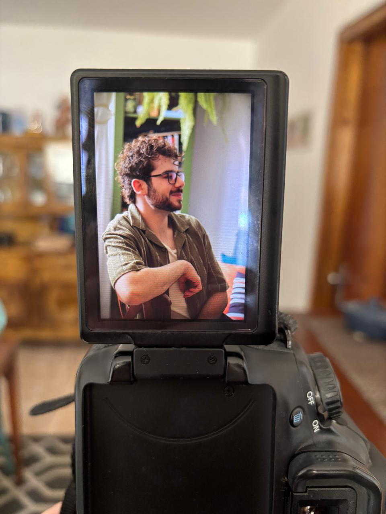

(41) 99734-5450
victorgaioskipsi@gmail.com
Atendimento online e presencial.
-
ESPAÇO TERAPÊUTICO ÂNIMA
Praça Zacarias, 58 - Sala 303, 3º andar
O profissional é pós-graduando em Psicologia Clínica e Psicanálise pela PUC-PR e segue seu percurso na psicanálise por meio de grupos de estudos, fóruns e seminários.
O atendimento é voltado a adultos e adolescentes, podendo ser realizado de forma online ou presencial.